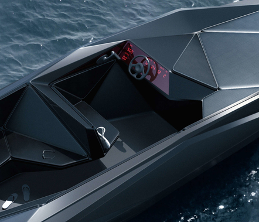

Tesla ne cesse d’innover
La marque connue pour sa gamme de voitures et de batteries électriques innovantes se propulse dans le futur. Elon Musk, qui est toujours à la recherche de nouvelles technologies, met un pied sur le marché maritime. Tesla avait habitué ses fans à des véhicules au design ambitieux avec une technologie à la pointe du futurisme. Elon Musk nous emporte cette fois-ci dans une nouvelle ère. Effectivement, le constructeur est allé bien plus loin dans l'originalité. C’est sur son compte Twitter que le PDG annonce en exclusivité le premier bateau Tesla, Arch-e-mede. Cette révélation fait des heureux, en lançant enfin sa série de bateau électrique, tant attendu les fans . Tesla entre dans le marché des bateaux de plaisance, en se démarquant des autres concurrents, avec une offre exclusivement électrique.
{kind=link}
À la pointe du futurisme.
Elon Musk connu pour un ses designs minimalistes, ses couleurs épurés et ses équipements high-tech. Vous ne serez pas déçu ! Le bateau sera une grandiose concrétisation avec un côté minimaliste, luxueuse et moderne. Tesla ne s’arrête pas que sur l’aspect. Il met en avant les différentes options et caractéristiques d'Arch-e-mede. Pour le départ d’un bateau, cette nouveauté comportera une protection contre les chocs latéraux, à l’avant et à l’arrière. Cette structure très résistance dans laquelle la batterie est intégrée au plancher pour une protection exceptionnelle. Ce modèle est conçu pour assurer une sécurité à 100 % grâce à une architecture électrique et pour réduire considérablement le risque de retournement ou de choc. La recharge auto-pratique expose une utilisation moderne, Arch-e-mède met en place une grande roue pro-pulsants qui tourbillonne pour transmettre de l’énergie hydraulique, cette énergie sera stocké dans un compartiment, pour une utilisation optimale. L’auto-pilotage sera intégré dans le bateau ce qui permettra à l’intelligence artificielle de prendre le contrôle durant l’intégralité d’un parcours. Cette utilisation peut être contrôlée à distance et optimisée par un service d’assistance Tesla. Avec ses nouvelles caractéristiques le bateau électrique Tesla est promis à un bel avenir.
{kind=link}
Une importante rentabilisation.
Le marché du bateau prend un nouveau tournant : l’Arch-e-mede devient un produit phare de Tesla. Effectivement, le voyage est sans limite. Ce dispositif rentabilise considérablement l'investissement, plus particulièrement les entreprises telles que Click & Boat. Cette plateforme, qui permet de mettre en location son bateau, devient de plus en plus florissante. L’initiative Arch-e-mede ouvre une importante rentabilisation, les prix sont élevés, certes, mais le milieu économique et touristique profite de cette avancée fulgurante. Par ailleurs, l’auto-pilotage des bateaux œuvre à des projets futurs, comme le service taxi-boat dans lequel Tesla mène un partenariat novateur. Selon les spécialistes, le chiffre d’affaire de Tesla augmenterait de plus de 20 %. Elon Musk annonce que la marque a déja reçu près de 200.000 reservations en ligne pour son nouveau modele.
{kind=link}
Les Chiffres parlent d'eux-mêmes
- 17% ont pris la version à 149.990€
- 41% ont pris la version à 159.990€
- 42% ont pris la version à 169.990€
Une nouvelle-ère
La révolution commence au moment où le service "taxi-boat" est mis en place. Cette innovation chamboule toute la société.
Par Edith Uber & Max Click